There are more than a hundred named cytokines and you will never learn them as a list. You do not have to. They obey a small number of rules — about size, concentration, range, receptor architecture and signalling — and those rules are what gets examined. Learn the rules here; the individual cytokines and their jobs are Part 5.بیش از صد سایتوکاین نامدار وجود دارد و هرگز آنها را بهشکل فهرست نخواهید آموخت. لازم هم نیست. آنها از شمار اندکی قاعده پیروی میکنند — دربارهٔ اندازه، غلظت، برد، معماری گیرنده و پیامرسانی — و همین قواعد است که سنجیده میشود. قواعد را اینجا بیاموزید؛ خود سایتوکاینها و کارشان موضوع بخش ۵ است.
By the end of this Part you should be able toدر پایان این بخش باید بتوانید
State the general properties of cytokines with numbers, not adjectives.ویژگیهای عمومی سایتوکاینها را با عدد بیان کنید، نه با صفت.
Define and give an example of pleiotropy, redundancy, synergy and antagonism.چندعملکردی، افزونگی، همافزایی و آنتاگونیسم را تعریف کنید و برای هر یک مثال بزنید.
Explain how adding a third chain converts the IL-2 receptor from low to high affinity.توضیح دهید افزودن زنجیرهٔ سوم چگونه گیرندهٔ IL-2 را از میل پایین به میل بالا بدل میکند.
Explain why one mutation in one shared chain causes severe combined immunodeficiency.توضیح دهید چرا یک جهش در یک زنجیرهٔ مشترک، نقص ایمنی ترکیبی شدید میسازد.
Draw the JAK–STAT pathway and name two ways the cell switches it off.مسیر JAK–STAT را بکشید و دو راه خاموشکردنش را نام ببرید.
4.1General Propertiesویژگیهای عمومی
Table 4.1 The five general properties, with the numbers that make them examinableجدول ۴.۱ — پنج ویژگی عمومی، با اعدادی که آنها را قابلسنجش میکنند
Propertyویژگی
And what follows from itو چه از آن نتیجه میشود
Produced by immune effector cells and other cell typesساختهٔ سلولهای اجرایی ایمنی و انواع سلولهای دیگر
Macrophages, lymphocytes, granulocytes and mast cells make them — but so do fibroblasts and endothelial cells. Cytokines are not the private language of the immune system; they are how any tissue calls for help.ماکروفاژ، لنفوسیت، گرانولوسیت و ماستسل میسازندشان — اما فیبروبلاست و سلول اندوتلیال هم میسازند. سایتوکاینها زبان خصوصی سامانهٔ ایمنی نیستند؛ راهیاند که هر بافتی با آن کمک میخواهد.
Small proteins, mostly < 30 kDaپروتئینهای کوچک، بیشتر زیر ۳۰ کیلودالتون
Small enough to diffuse quickly through tissue and to be filtered by the kidney, which is part of why their half-lives are minutes.آنقدر کوچک که بهسرعت در بافت پخش شوند و از کلیه فیلتر شوند، و همین بخشی از دلیل نیمهعمر چنددقیقهای آنهاست.
Act at picogram concentrations (pg/ml)در غلظت پیکوگرم بر میلیلیتر عمل میکنند
Roughly a million-fold lower than the plasma concentration of albumin. It follows that their receptors must have extremely high affinity — see §4.3 — and that a small change in production makes a large change in effect.حدود یکمیلیون برابر کمتر از غلظت پلاسمایی آلبومین. پس گیرندههایشان باید میل ترکیبی بسیار بالا داشته باشند — بخش ۴.۳ — و تغییر کوچک در تولید، تغییر بزرگ در اثر میدهد.
Mostly local, like hormones of the neighbourhood; a few systemicبیشتر موضعی، مانند هورمونهای همسایگی؛ اندکی سیستمیک
The default is a short-range conversation between adjacent cells. When a cytokine does reach the circulation in quantity — TNF, IL-1, IL-6 — the result is fever, acute-phase response, and in the extreme case shock (Part 8).حالت پیشفرض، گفتوگوی کوتاهبرد میان سلولهای مجاور است. وقتی سایتوکاینی بهواقع به مقدار زیاد به گردش خون برسد — TNF، IL-1، IL-6 — نتیجه تب، پاسخ فاز حاد و در حالت افراطی شوک است (بخش ۸).
Soluble or held on the cell surfaceمحلول یا نگهداشتهشده روی سطح سلول
A membrane-bound cytokine can only act on a cell it is touching, which converts a diffusible signal into a contact-dependent one. Membrane TNF and CD40L work this way, and it is why the CD molecules of Part 1 and the cytokines of Part 4 are not two separate topics.سایتوکاین متصل به غشا تنها روی سلولی اثر میگذارد که لمسش میکند، و این پیام انتشاری را به پیام وابسته به تماس بدل میکند. TNF غشایی و CD40L اینگونه کار میکنند، و به همین سبب مولکولهای CD بخش ۱ و سایتوکاینهای بخش ۴ دو موضوع جدا نیستند.
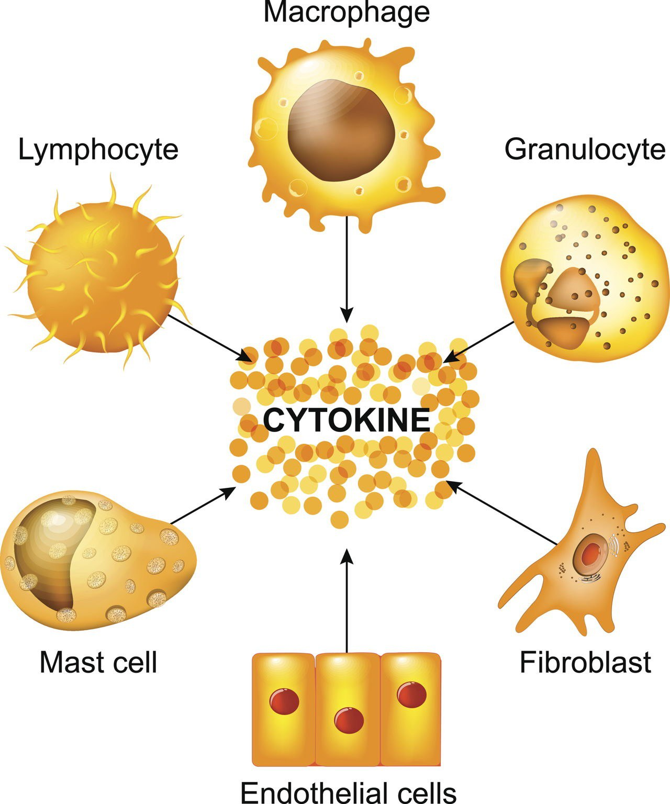
Fig 4.1 Who makes them: lymphocytes, macrophages, granulocytes, mast cells, fibroblasts and endothelial cells all feed the same pool.چه کسانی میسازندشان: لنفوسیت، ماکروفاژ، گرانولوسیت، ماستسل، فیبروبلاست و سلول اندوتلیال، همه به یک مخزن میریزند.
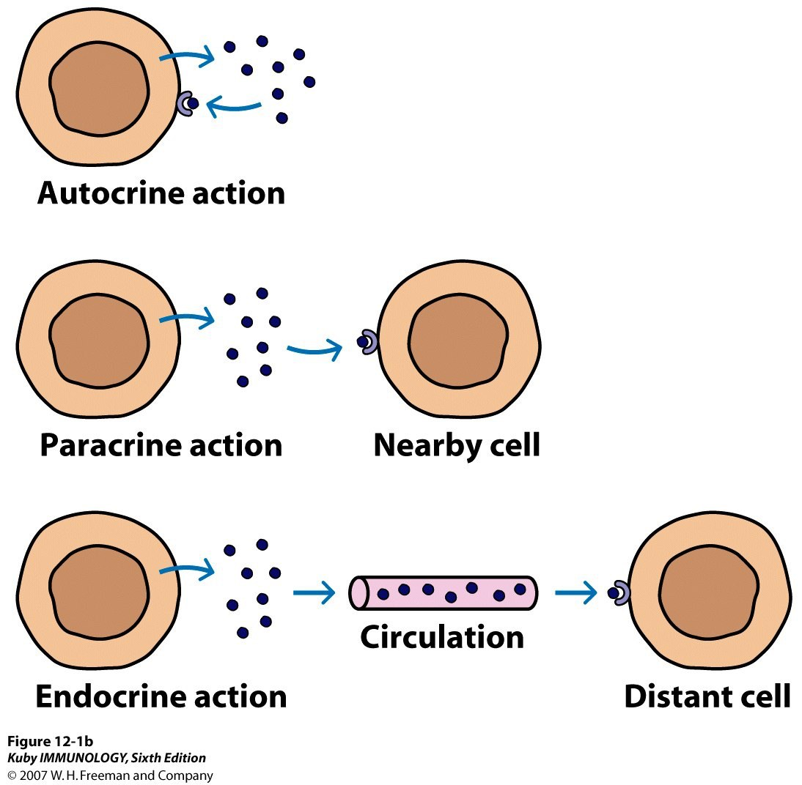
Fig 4.2 The three ranges. Autocrine — IL-2 made by a T cell acting back on that same T cell. Paracrine — IL-4 made by a T cell acting on a neighbouring B cell. Endocrine — carried in the circulation to a distant organ, the way a classical hormone works.سه برد. اتوکرین — IL-2ی که سلول T میسازد و بر همان سلول T اثر میگذارد. پاراکرین — IL-4ی که سلول T میسازد و بر سلول B همسایه اثر میگذارد. اندوکرین — حملشده در گردش خون به اندامی دور، همانگونه که هورمون کلاسیک کار میکند.
4.2Functional Properties: Four Words You Must Be Able to Useویژگیهای کارکردی: چهار واژه که باید بتوانید بهکار ببرید
Name decoder — the four functional wordsرمزگشای نام — چهار واژهٔ کارکردی
Pleiotropy
One cytokine, many different effectsیک سایتوکاین، اثرهای متفاوت بسیار
IL-2 controls proliferation, apoptosis and regulatory T-cell development — three outcomes that point in different directions, from one moleculeIL-2تکثیر، آپوپتوز و تکامل سلول T تنظیمی را کنترل میکند — سه نتیجه که در جهتهای متفاوتاند، از یک مولکول
Redundancy
Different cytokines, the same effectسایتوکاینهای متفاوت، اثر یکسان
IL-15 and IL-2 can both sustain NK-cell proliferation and development. Removing one leaves the other doing the jobIL-15 و IL-2 هر دو میتوانند تکثیر و تکامل سلول NK را پشتیبانی کنند. حذف یکی، دیگری را سر کار میگذارد
Synergy
Two together do more than the sum of both aloneدو تا با هم بیش از جمع جبریشان اثر دارند
IL-12 and IFN-γ together promote Th1 differentiation far more strongly than either aloneIL-12 و IFN-γ با هم تمایز Th1 را بسیار قویتر از هر کدام بهتنهایی پیش میبرند
Antagonism
One cytokine blocks another's effectیک سایتوکاین اثر دیگری را مسدود میکند
IL-12/IFN-γ and IL-4 antagonise each other in controlling Th1 versus Th2 development. The two programmes actively suppress one anotherIL-12/IFN-γ و IL-4 در کنترل تکامل Th1 در برابر Th2 یکدیگر را خنثی میکنند. دو برنامه فعالانه هم را سرکوب میکنند
Worked example — why anti-cytokine drugs sometimes disappoint. Redundancy predicts it. If two cytokines do the same job, neutralising one leaves the other in place, and the patient does not improve. This is exactly why blocking a shared receptor subunit (§4.4) is often more effective than blocking a single cytokine — and why ustekinumab, which targets the p40 subunit common to IL-12 and IL-23, does more than an antibody against either cytokine alone. Redundancy also explains the opposite observation: single-cytokine knockout mice frequently look almost normal.مثال حلشده — چرا داروهای ضدسایتوکاین گاهی ناامید میکنند. افزونگی پیشبینیاش میکند. اگر دو سایتوکاین یک کار را بکنند، خنثیکردن یکی، دیگری را سر جایش میگذارد و بیمار بهتر نمیشود. دقیقاً به همین سبب مسدودکردن زیرواحد گیرندهٔ مشترک (بخش ۴.۴) اغلب کارآمدتر از مسدودکردن یک سایتوکاین است — و به همین سبب اوستکینوماب که زیرواحد p40 مشترک میان IL-12 و IL-23 را هدف میگیرد، بیش از آنتیبادی ضد هر یک از آن دو کار میکند. افزونگی مشاهدهٔ معکوس را هم توضیح میدهد: موشهای فاقد یک سایتوکاین مکرراً تقریباً طبیعی بهنظر میرسند.
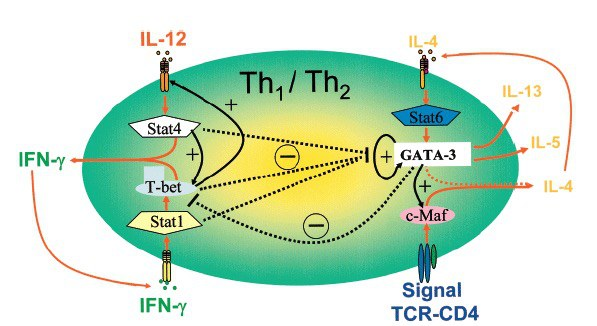
Fig 4.3 Antagonism drawn as a circuit. IL-12 → STAT4 → T-bet → IFN-γ (the Th1 arm) and IL-4 → STAT6 → GATA-3 → IL-4, IL-5, IL-13 (the Th2 arm). The minus signs in the middle are the point: each master transcription factor suppresses the other, and each arm's output cytokine reinforces its own arm. A circuit with positive feedback on each side and mutual inhibition between them is a switch — which is why a T cell commits to one lineage rather than drifting between them.آنتاگونیسم بهشکل یک مدار. IL-12 → STAT4 → T-bet → IFN-γ (بازوی Th1) و IL-4 → STAT6 → GATA-3 → IL-4, IL-5, IL-13 (بازوی Th2). علامتهای منفیِ وسط، نکتهٔ اصلیاند: هر عامل رونویسی اصلی دیگری را سرکوب میکند، و سایتوکاین خروجیِ هر بازو بازوی خودش را تقویت میکند. مداری با بازخورد مثبت در هر طرف و مهار متقابل میان آن دو، یک کلید است — و به همین سبب سلول T به یک رده متعهد میشود بهجای آنکه میانشان سرگردان بماند.
4.3Receptor Oligomerisation and Binding Affinityالیگومریزاسیون گیرنده و میل ترکیبی
The two signalling principles the lecture statesدو اصل پیامرسانی که درس بیان میکند
Cytokines signal as oligomeric complexes. A single receptor chain sitting alone in the membrane does nothing. Signalling begins when the ligand pulls two or three chains together.سایتوکاینها بهصورت کمپلکسهای الیگومری پیام میدهند. یک زنجیرهٔ گیرندهٔ تنها در غشا هیچ نمیکند. پیامرسانی وقتی آغاز میشود که لیگاند دو یا سه زنجیره را کنار هم بکشد.
Oligomerisation dictates affinity, specificity and diversity. Which chains are recruited decides how tightly the ligand is held, which ligand fits at all, and how many different signals one small set of chains can generate.الیگومریزاسیون، میل ترکیبی، اختصاصیت و تنوع را تعیین میکند. اینکه کدام زنجیرهها فراخوانده شوند تعیین میکند لیگاند چقدر محکم نگه داشته شود، اصلاً کدام لیگاند جا شود، و یک مجموعهٔ کوچک از زنجیرهها چند پیام متفاوت بسازد.
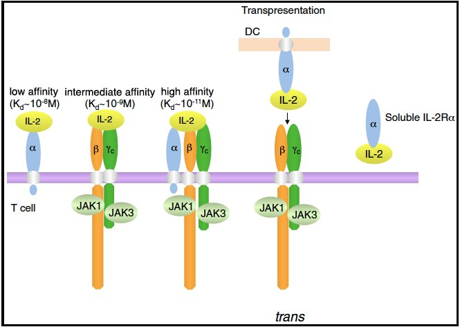
Fig 4.4 The IL-2 receptor in its three states, and the numbers are worth memorising. α alone: low affinity, Kd ≈ 10⁻⁸ M — binds IL-2 but cannot signal, because α has no cytoplasmic signalling tail. β + γc: intermediate, Kd ≈ 10⁻⁹ M — can signal; this is the resting form on NK cells and memory T cells. α + β + γc: high affinity, Kd ≈ 10⁻¹¹ M — a hundred-fold tighter, and the form on a recently activated T cell. On the right, soluble IL-2Rα shed into plasma, and trans-presentation, where one cell hands IL-2 to another.گیرندهٔ IL-2 در سه حالتش، و اعدادش ارزش حفظکردن دارند. α تنها: میل پایین، Kd ≈ 10⁻⁸ مولار — IL-2 را میبندد اما نمیتواند پیام بدهد، چون α دُم پیامرسان سیتوپلاسمی ندارد. β + γc: متوسط، 10⁻⁹ مولار — میتواند پیام بدهد؛ این شکل استراحتی روی سلول NK و سلول T خاطره است. α + β + γc: میل بالا، 10⁻¹¹ مولار — صد برابر محکمتر، و شکل موجود روی سلول Tی که تازه فعال شده. سمت راست، IL-2Rα محلول که به پلاسما ریخته میشود، و عرضهٔ ترانس که در آن یک سلول IL-2 را به دیگری میسپارد.
Why this design is cleverچرا این طراحی هوشمندانه است
IL-2 circulates at picomolar concentrations. A resting T cell, carrying only the intermediate-affinity βγc receptor, effectively cannot hear it. The act of being activated induces CD25 (IL-2Rα), which converts that same receptor to the high-affinity form — and now the cell can capture IL-2 at concentrations a hundred times lower.IL-2 در غلظتهای پیکومولار میگردد. سلول T استراحتی که تنها گیرندهٔ βγc با میل متوسط را دارد، عملاً نمیتواند آن را بشنود. خودِ فعالشدن، CD25 (IL-2Rα) را القا میکند و همان گیرنده را به شکل با میل بالا بدل میکند — و اکنون سلول میتواند IL-2 را در غلظتهای صد برابر پایینتر بگیرد.
The consequence is selective amplification of exactly the right clone: among a million T cells bathed in the same IL-2, only the ones that have just seen their antigen can use it. The cytokine is shared; the receptor is not. This is how a clonal response stays clonal despite a diffusible growth factor.پیامدش تقویت گزینشی دقیقاً همان کلون درست است: میان یک میلیون سلول T که در همان IL-2 شناورند، تنها آنهایی که تازه آنتیژنشان را دیدهاند میتوانند از آن استفاده کنند. سایتوکاین مشترک است؛ گیرنده نه. اینگونه است که پاسخ کلونال با وجود یک عامل رشد انتشاری، کلونال میماند.
Clinical Correlation — CD25 as a drug target and a markerارتباط بالینی — CD25 بهعنوان هدف دارویی و نشانگر
Basiliximab is an anti-CD25 monoclonal given at the time of renal transplantation. Read the name with the Session 2 decoder: -ximab = chimeric. It blocks the high-affinity receptor on recently activated T cells only — precisely the alloreactive clones — and leaves resting T cells untouched. Soluble CD25 in serum is used as a marker of T-cell activation, and is one of the diagnostic criteria for haemophagocytic lymphohistiocytosis, a cytokine-storm syndrome you will meet in §8.2.بازیلیکسیماب مونوکلونال ضد CD25 است که هنگام پیوند کلیه داده میشود. نامش را با رمزگشای جلسهٔ ۲ بخوانید: -ximab یعنی کایمریک. گیرندهٔ با میل بالا را فقط روی سلولهای Tتازهفعالشده مسدود میکند — همان کلونهای آلوواکنشی — و سلولهای T استراحتی را دستنخورده میگذارد. CD25 محلول در سرم نشانگر فعالشدن سلول T است و یکی از معیارهای تشخیصی لنفوهیستیوسیتوز هموفاگوسیتیک، سندرم طوفان سایتوکاینیای که در بخش ۸.۲ خواهید دید.
4.4Shared Subunits and the Common γ Chainزیرواحدهای مشترک و زنجیرهٔ γ مشترک
Cytokines and their receptors are built like modular kit. A single subunit can partner with several different subunits, and each combination is a different ligand or a different receptor. This is how the immune system gets combinatorial diversity out of a limited parts list — and it is also how one mutation can be catastrophic.سایتوکاینها و گیرندههایشان مانند قطعات ماژولار ساخته شدهاند. یک زیرواحد میتواند با چند زیرواحد متفاوت شریک شود، و هر ترکیب، لیگاندی متفاوت یا گیرندهای متفاوت است. اینگونه سامانهٔ ایمنی از فهرست محدودی از قطعات، تنوع ترکیبیاتی میگیرد — و همینگونه یک جهش میتواند فاجعهبار باشد.
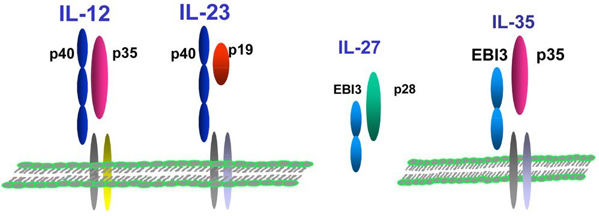
Fig 4.5 Shared subunits on the ligand side. p40 pairs with p35 to make IL-12 and with p19 to make IL-23. EBI3 pairs with p28 to make IL-27 and with p35 to make IL-35. Four cytokines with quite different jobs, built from five parts.زیرواحدهای مشترک در سمت لیگاند. p40 با p35 جفت میشود و IL-12 میسازد و با p19 جفت میشود و IL-23. EBI3 با p28 جفت میشود و IL-27 و با p35 جفت میشود و IL-35. چهار سایتوکاین با کارهای کاملاً متفاوت، ساختهشده از پنج قطعه.
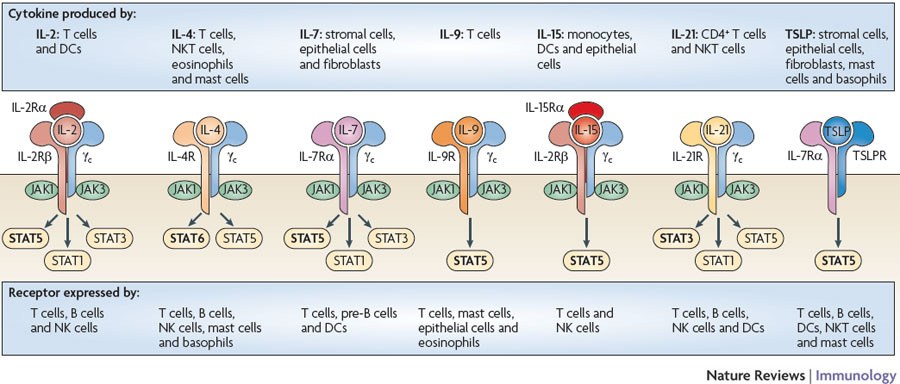
Fig 4.6 Shared subunits on the receptor side. The common γ chain (γc, CD132) is a component of the receptors for IL-2, IL-4, IL-7, IL-9, IL-15 and IL-21. Each receptor has its own private chain for specificity and shares γc for signalling — and γc is the chain that carries JAK3.زیرواحدهای مشترک در سمت گیرنده. زنجیرهٔ γ مشترک (γc، CD132) جزئی از گیرندههای IL-2، IL-4، IL-7، IL-9، IL-15 و IL-21 است. هر گیرنده زنجیرهٔ خصوصی خود را برای اختصاصیت دارد و γc را برای پیامرسانی به اشتراک میگذارد — و γc همان زنجیرهای است که JAK3 را حمل میکند.
Absence proves function — X-linked SCID, the “bubble boy” diseaseنبودش کارش را ثابت میکند — SCID وابسته به X، بیماری «پسر حبابی»
The lecturer asks directly: what happens if you carry a mutation that abrogates the function of the common γ chain? Work it out rather than recall it. γc is required by six cytokine receptors, so losing it removes six signals at once:مدرّس مستقیم میپرسد: اگر جهشی داشته باشید که عملکرد زنجیرهٔ γ مشترک را از بین ببرد چه میشود؟ بهجای یادآوری، استنتاجش کنید. γc برای شش گیرندهٔ سایتوکاینی لازم است، پس ازدستدادنش شش پیام را یکجا برمیدارد:
No IL-7 signal → T cells never develop. T⁻بدون پیام IL-7 ← سلول T هرگز تکامل نمییابد. T منفی
No IL-15 signal → NK cells never develop. NK⁻بدون پیام IL-15 ← سلول NK هرگز تکامل نمییابد. NK منفی
No IL-21 signal → B cells are present in normal numbers but cannot make useful antibody. B⁺ but non-functionalبدون پیام IL-21 ← سلولهای B به تعداد طبیعی هستند اما نمیتوانند آنتیبادی مفید بسازند. B مثبت اما بیعملکرد
The result is the classic T⁻ B⁺ NK⁻ severe combined immunodeficiency, X-linked because the γc gene is on the X chromosome — which is why it presents in boys. Untreated, the infant dies of opportunistic infection in the first year, and the child photographed in the sterile isolator is the reason the disease is remembered as “bubble boy” syndrome. The cure is a haematopoietic stem-cell transplant, and X-SCID was one of the first diseases treated by gene therapy.نتیجه، همان نقص ایمنی ترکیبی شدید T منفی، B مثبت، NK منفی کلاسیک است، و وابسته به X چون ژن γc روی کروموزوم X است — و به همین سبب در پسران بروز میکند. بدون درمان، شیرخوار در سال اول با عفونت فرصتطلب میمیرد، و کودکی که در ایزولاتور استریل عکس گرفته شده، دلیل بهیادماندن این بیماری با نام «سندرم پسر حبابی» است. درمان، پیوند سلول بنیادی خونساز است، و X-SCID از نخستین بیماریهایی بود که با ژندرمانی درمان شد.
Milder versions exist and matter. A hypomorphic mutation — one that reduces rather than abolishes γc function — gives a less severe combined immunodeficiency in which the patient survives longer but suffers opportunistic infections such as severe, persistent Candida. The same logic applies to JAK3, the kinase that γc carries: JAK3 deficiency produces a clinically identical SCID, but autosomal recessive rather than X-linked, and therefore seen in girls as well.نسخههای خفیفتر وجود دارند و مهماند. جهش هایپومورف — که عملکرد γc را کاهش میدهد نه حذف — نقص ایمنی ترکیبی خفیفتری میدهد که بیمار بیشتر زنده میماند اما دچار عفونتهای فرصتطلب مانند کاندیدای شدید و پایدار میشود. همین منطق دربارهٔ JAK3 — کینازی که γc حملش میکند — هم صادق است: کمبود JAK3SCIDی از نظر بالینی یکسان میدهد، اما اتوزومال مغلوب نه وابسته به X، و بنابراین در دختران هم دیده میشود.
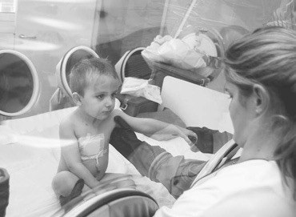
Fig 4.7 A child with severe combined immunodeficiency in a sterile isolator — the image that named the syndrome.کودکی مبتلا به نقص ایمنی ترکیبی شدید در ایزولاتور استریل — تصویری که نام سندرم از آن آمد.
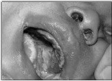
Fig 4.8 The milder form: severe, persistent mucosal Candida infection. Deep fungal and viral infections in a child are a T-cell defect until proved otherwise.شکل خفیفتر: عفونت شدید و پایدار کاندیدای مخاطی. عفونت قارچی و ویروسی عمقی در کودک، تا خلافش ثابت نشود، نقص سلول T است.
4.5JAK–STAT: the Shortest Path from Surface to GeneJAK–STAT: کوتاهترین راه از سطح تا ژن
Fig 4.9 JAK–STAT is the shortest signalling pathway in the cell: from the outside of the membrane to DNA in five steps, with no second messengers at all. Compare it with the TCR strip of Fig 2.5, which needed calcium, DAG, PKC and three MAP kinases to reach the same destination.JAK–STATکوتاهترین مسیر پیامرسانی سلول است: از بیرون غشا تا DNA در پنج گام، بدون هیچ پیامبر ثانویه. با نوار TCR در شکل ۲.۵ مقایسه کنید که برای رسیدن به همان مقصد به کلسیم، DAG، PKC و سه کیناز MAP نیاز داشت.
Table 4.2 The cast of JAK–STATجدول ۴.۲ — بازیگران JAK–STAT
Familyخانواده
Membersاعضا
What to knowچه باید دانست
JAK — Janus kinasesJAK — کینازهای ژانوس
JAK1, JAK2, JAK3, Tyk2 — fourJAK1، JAK2، JAK3، Tyk2 — چهار تا
They sit pre-bound to the receptor tails, waiting. JAK3 is restricted to haematopoietic cells and associates specifically with γc — which is why a JAK3 inhibitor is comparatively lymphocyte-selective, and why JAK3 deficiency phenocopies X-SCIDاز پیش به دُم گیرنده متصلاند و منتظر میمانند. JAK3 محدود به سلولهای خونساز است و مشخصاً با γc همراه میشود — و به همین سبب مهارکنندهٔ JAK3 نسبتاً گزینشی برای لنفوسیت است، و کمبود JAK3 فنوکپی X-SCID است
STAT — signal transducers and activators of transcriptionSTAT — منتقلکنندههای پیام و فعالکنندههای رونویسی
The name is the mechanism: one protein that is both the signal transducer and the transcription factor. Which STAT is used determines which genes are switched on — STAT4 for IL-12 → Th1, STAT6 for IL-4 → Th2نام، خودِ سازوکار است: یک پروتئین که هم منتقلکنندهٔ پیام است هم عامل رونویسی. اینکه کدام STAT بهکار رود تعیین میکند کدام ژنها روشن شوند — STAT4 برای IL-12 → Th1، STAT6 برای IL-4 → Th2
Note on the slideیادداشتی دربارهٔ اسلاید
The lecture slide says “6 STATs — 1, 2, 3, 4, 5a, 5b”. The canonical family in mammals has seven members, the seventh being STAT6 — and STAT6 appears by name on the lecturer's own Th1/Th2 figure two slides earlier, as the transducer of IL-4. If you are asked to list them, list seven; if you are reproducing the slide, note that STAT5a and STAT5b are counted separately, which is why the list looks short.اسلاید درس میگوید «۶ تا STAT — ۱، ۲، ۳، ۴، ۵a، ۵b». خانوادهٔ متعارف در پستانداران هفت عضو دارد و هفتمی STAT6 است — و STAT6 با نام خودش روی شکل Th1/Th2 همان مدرّس، دو اسلاید پیشتر، بهعنوان منتقلکنندهٔ IL-4 آمده است. اگر خواستند فهرست کنید، هفت تا بگویید؛ اگر اسلاید را بازتولید میکنید، توجه کنید STAT5a و STAT5b جدا شمرده شدهاند و برای همین فهرست کوتاه بهنظر میرسد.
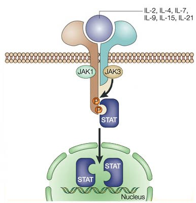
Fig 4.10 The γc family receptor as the textbook draws it: the private chain and γc, carrying JAK1 and JAK3 respectively, phosphorylate each other; a STAT docks, is phosphorylated, dimerises, and walks to the nucleus. The ligand list on the arrow — IL-2, IL-4, IL-7, IL-9, IL-15, IL-21 — is the γc family of §4.4.گیرندهٔ خانوادهٔ γc آنگونه که کتاب درسی میکشد: زنجیرهٔ خصوصی و γc که بهترتیب JAK1 و JAK3 را حمل میکنند، یکدیگر را فسفریله میکنند؛ یک STAT مینشیند، فسفریله میشود، دایمر میسازد و بهسوی هسته میرود. فهرست لیگاندها روی پیکان — IL-2، IL-4، IL-7، IL-9، IL-15، IL-21 — همان خانوادهٔ γc در بخش ۴.۴ است.
4.6Switching the Signal Off: SOCS, CIS and Phosphatasesخاموشکردن پیام: SOCS، CIS و فسفاتازها
A pathway with no off-switch is a disease. The cell has three, and the elegant part is that the cytokine itself switches them on — exactly the same self-limiting logic as CTLA-4 in §2.2.مسیری که کلید خاموش ندارد، بیماری است. سلول سه تا دارد و بخش ظریفش این است که خودِ سایتوکاین آنها را روشن میکند — دقیقاً همان منطق خودمحدودکنندهٔ CTLA-4 در بخش ۲.۲.
Table 4.3 Three ways to stop a cytokine signalجدول ۴.۳ — سه راه متوقفکردن پیام سایتوکاینی
Brakeترمز
Induced byالقاشده توسط
Mechanismسازوکار
CIS cytokine-inducible SH2-containing proteinCIS پروتئین دارای SH2 القاشونده با سایتوکاین
Many cytokines — classic feedback regulationبسیاری از سایتوکاینها — تنظیم بازخوردی کلاسیک
Occupies the docking site. Associates with βc and the erythropoietin receptor and prevents STAT from docking on the phosphorylated tail. The receptor is still signalling — there is simply nothing left to receive itجایگاه اتصال را اشغال میکند. با βc و گیرندهٔ اریتروپویتین همراه میشود و نمیگذارد STAT بنشیند روی دُم فسفریله. گیرنده هنوز پیام میدهد — فقط چیزی برای دریافتش نمانده
SOCS suppressor of cytokine signallingSOCS سرکوبگر پیامرسانی سایتوکاین
Cytokinesسایتوکاینها
Binds and inhibits the JAKs themselves, preventing STAT recruitment. Then it goes further: the SOCS box recruits a Cullin-family E3 ubiquitin ligase, and the JAK is destroyed in the proteasome. This is not damping — it is demolitionبه خودِ JAKها میچسبد و مهارشان میکند و از فراخوانی STAT جلوگیری میکند. سپس فراتر میرود: جعبهٔ SOCS یک لیگاز E3 خانوادهٔ کولین را فرا میخواند و JAKدر پروتئازوم نابود میشود. این تضعیف نیست — تخریب است
Phosphatases e.g. SHP-1فسفاتازها مانند SHP-1
Constitutively presentبهطور دائمی حاضر
Remove the phosphate. Every step of JAK–STAT is a phosphorylation, so a phosphatase simply reverses it. Fast, reversible, and requires no new protein synthesisفسفات را برمیدارد. هر گام JAK–STAT یک فسفریلاسیون است، پس فسفاتاز صرفاً معکوسش میکند. سریع، برگشتپذیر، و بدون نیاز به ساخت پروتئین تازه
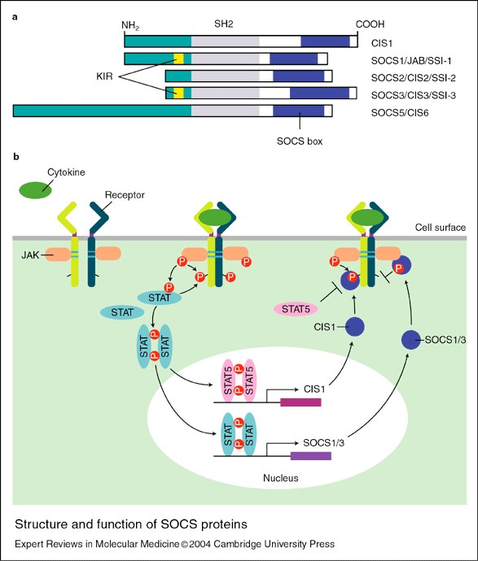
Fig 4.11 The SOCS family. Every member has the same three-part architecture: a variable N-terminus, an SH2 domain that finds the phosphotyrosine, and the SOCS box at the C-terminus. Below, the feedback loop: cytokine → STAT → nucleus → transcription of CIS and SOCS → inhibition of the receptor that started it.خانوادهٔ SOCS. هر عضو همان معماری سهبخشی را دارد: انتهای N متغیر، یک دومین SH2 که فسفوتیروزین را مییابد، و جعبهٔ SOCS در انتهای C. پایین، حلقهٔ بازخورد: سایتوکاین ← STAT ← هسته ← رونویسی CIS و SOCS ← مهار همان گیرندهای که آغازش کرد.
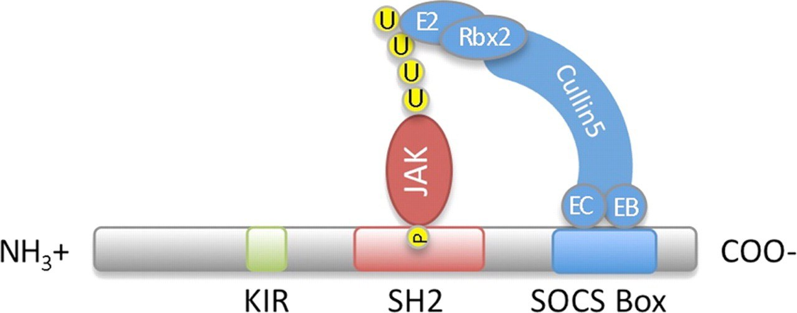
Fig 4.12 How the JAK is destroyed. The SOCS box binds Cullin and Rbx2, assembling an E3 ubiquitin ligase around the captured JAK. Ubiquitin chains are built on it, and the proteasome takes it apart. The cell does not merely silence the signal; it removes the machine.JAK چگونه نابود میشود. جعبهٔ SOCS به کولین و Rbx2 میچسبد و یک لیگاز یوبیکوئیتین E3 را گرداگرد JAK اسیر مونتاژ میکند. زنجیرههای یوبیکوئیتین رویش ساخته میشوند و پروتئازوم از هم بازش میکند. سلول صرفاً پیام را خاموش نمیکند؛ ماشین را برمیدارد.
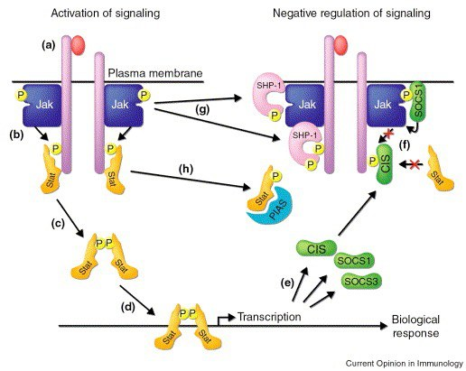
Fig 4.13 Activation (left) against negative regulation (right), on one diagram. Trace the letters: (a–d) is the normal pathway to transcription; (e) STAT induces CIS, SOCS1 and SOCS3; (f) CIS blocks the STAT docking site; (g)SHP-1 dephosphorylates the receptor and JAK; (h) SOCS targets the JAK for degradation. Every off-switch is switched on by the signal itself.فعالسازی (چپ) در برابر تنظیم منفی (راست)، در یک نمودار. حروف را دنبال کنید: (a–d) مسیر عادی تا رونویسی؛ (e)STATCIS، SOCS1 و SOCS3 را القا میکند؛ (f)CIS جایگاه اتصال STAT را میبندد؛ (g)SHP-1 گیرنده و JAK را دفسفریله میکند؛ (h)SOCSJAK را برای تجزیه نشانه میرود. هر کلید خاموش را خودِ همان پیام روشن میکند.
Clinical Correlation — drugging the pathway in both directionsارتباط بالینی — دارورسانی به مسیر در هر دو جهت
Blocking it: the JAK inhibitors — tofacitinib, baricitinib, upadacitinib (rheumatoid arthritis, ulcerative colitis, atopic dermatitis) and ruxolitinib (myelofibrosis, polycythaemia vera, graft-versus-host disease). Because so many cytokines converge on four kinases, one small molecule blocks a whole panel of cytokines at once — which is both the efficacy and the toxicity: infection, herpes zoster reactivation, cytopenias.مسدودکردنش:مهارکنندههای JAK — توفاسیتینیب، باریسیتینیب، اوپاداسیتینیب (آرتریت روماتوئید، کولیت اولسراتیو، درماتیت آتوپیک) و روکسولیتینیب (میلوفیبروز، پلیسیتمی ورا، بیماری پیوند علیه میزبان). چون سایتوکاینهای بسیاری به چهار کیناز میرسند، یک مولکول کوچک کل مجموعهای از سایتوکاینها را یکجا مسدود میکند — و همین هم کارایی است هم سمّیت: عفونت، فعالشدن مجدد زونا، سیتوپنی.
When it is stuck on: the JAK2 V617F mutation makes the kinase constitutively active without any cytokine, and causes polycythaemia vera, essential thrombocythaemia and primary myelofibrosis. A pathway whose brakes are described on this page is a pathway whose failure is a haematological malignancy.وقتی گیر میکند و روشن میماند: جهش JAK2 V617F کیناز را بدون هیچ سایتوکاینی دائماً فعال میکند و پلیسیتمی ورا، ترومبوسیتمی اسانسیل و میلوفیبروز اولیه میسازد. مسیری که ترمزهایش در همین صفحه شرح داده شد، مسیری است که خرابیاش بدخیمی خونی است.